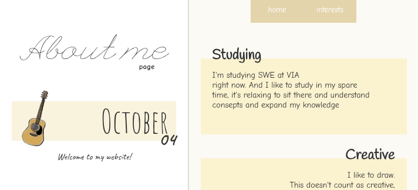
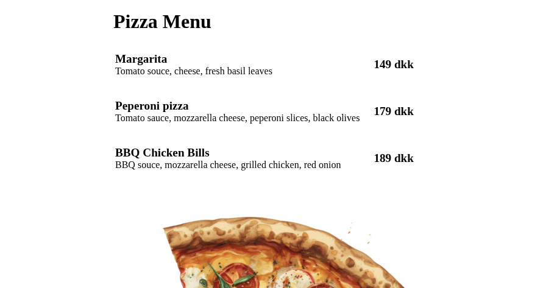

PORTFOLIO
ABOUT ME WEBSITE
09.26
A project I made in the first semester at VIA University. It's a website displaying my interests I had when I made the website, a CV and this portfolio.

PIZZA MENU
09.26
The first website I made at VIA, just a quick website to go through some web-coding before thr about me website.

Project 3
month.year
I'll add a website here once I make one. Here is a link to lynx wiki instead.

Project 4
month.year
I'll add a website here once I make one. Here is a link to nerd wiki instead.

Project 5
month.year
I'll add a website here once I make one. Here is a link to genshin wiki instead.